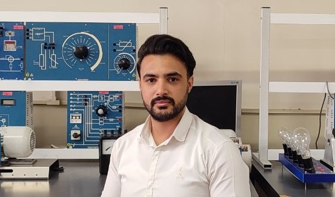
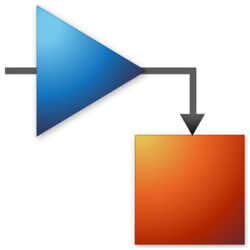
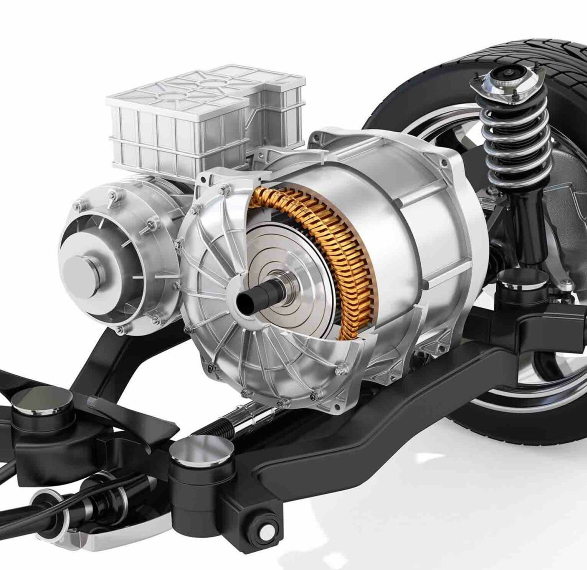

Electrical engineer with expertise in power electronics and electrical machine design, backed by 5+ years of industrial experience. Specialized in motor control and advanced machine design for transportation electrification. Strong academic foundation supported by peer-reviewed publications and proven ability to bridge research and practical applications.
Contact Me Research Areas
Research, innovation, and engineering excellence.
I design, model, and control advanced electric machines and motor drive systems.
With expertise in PMSM, SynRM, PM-assisted SynRM, power electronics, and predictive control, I bridge academic research and industrial innovation to develop high-performance solutions for electrification, automation, and next-generation energy systems.
Research, innovation, and engineering excellence.
Institute: K.N. Toosi University of Tehchnology
Location:Tehran, Iran
Year: 2020 – 2023
Rank: A
Thesis: Developing Sensorless Control Algorithms for a PMASynRM Used in e-Bike Apllication
I developed a new controller for a PMASynRMused in an e-bike. The con troller is based on a simple predictive model, aiming to balance ease of implementa tion—considering hardware constraints—with improved control performance over con ventional controllers. The controller was successfully implemented and experimentally validated.
Institute: K.N. Toosi University of Technology
Location: Tehran, Iran
Year: 2016 – 2020
Rank: A
Thesis: Performance Optimization of Automobile Cooling Fan
I optimized the winding con figuration of a DC motor used as an automotive cool ing fan. The optimization considered both cost and per formance, resulting in a 15% improvement in performance while keeping the total cost increase under 5%.
Research, simulation, design, and implementation.

MATLAB, Simulink, System Identification, Control Design, Dynamic Modeling, Data Analysis

PMSM, IPMSM, PMaSynRM, SRM, Multiphase Machines, Generator Design
ANSYS Maxwell, JMAG, Electromagnetic Design, Performance Evaluation
STM32, Embedded C, C++, Real-Time Control
Python, MATLAB, C, C++, Automation & Post-Processing
Motor Drives, Converters, EV Power Systems, Energy Management
Selected highlights from academic and research activities.
Developed advanced predictive control strategies for high-performance speed regulation and dynamic response improvement.
Designed and analyzed Permanent Magnet Assisted Synchronous Reluctance Motors for transportation electrification applications.
Investigated transverse flux generators using ferrite and rare-earth magnets for cost-effective renewable energy systems.
Implemented motor control algorithms on STM32-based platforms for real-time embedded applications.
Engineering projects and research developments.
Development of a complete emulator framework for field-oriented controlled permanent magnet synchronous motor drives.
Design optimization and performance analysis of permanent magnet assisted synchronous reluctance motors for electric bicycles.
Model-based predictive controller development for high-performance motor drive systems.
Dynamic modeling and control architecture development for future transportation electrification systems.
Research contributions and scientific publications.
Author of more than 10 peer-reviewed publications in electrical machines, motor drives, predictive control systems, renewable energy applications, and transportation electrification.
Open to research collaborations, Ph.D. opportunities, and engineering positions.
your.email@example.com
linkedin.com/in/your-profile
Add your Scholar profile link
Available for international research opportunities